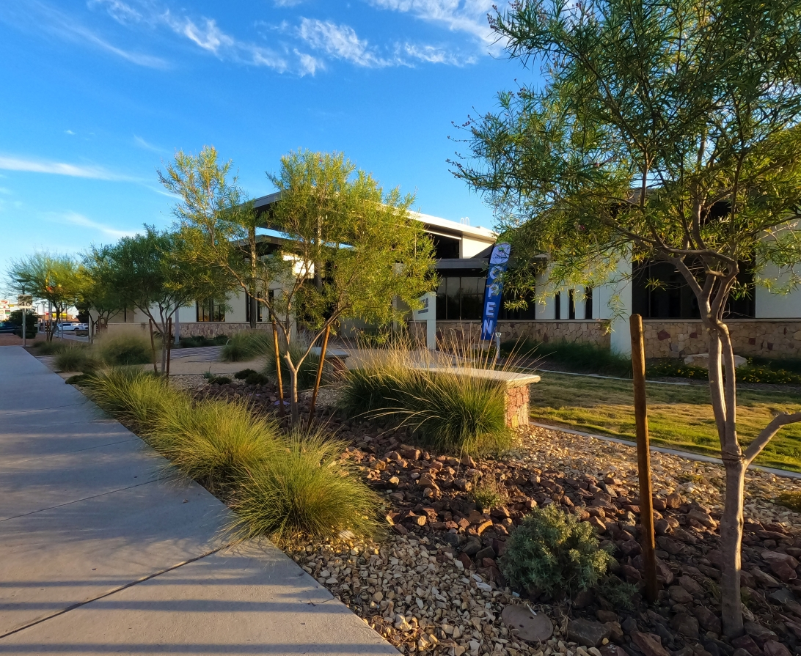

{% extends 'base.html' %}
{% block content %}

{% load static %}

<section class="photo-slider">
  
  
  
  
  

  <div class="dots" hidden>
    <span class="dot" onclick="currentSlide(1)"></span>
    <span class="dot" onclick="currentSlide(2)"></span>
    <span class="dot" onclick="currentSlide(3)"></span>
    <span class="dot" onclick="currentSlide(4)"></span>
    <span class="dot" onclick="currentSlide(5)"></span>
  </div>
</section>

{% endblock %}